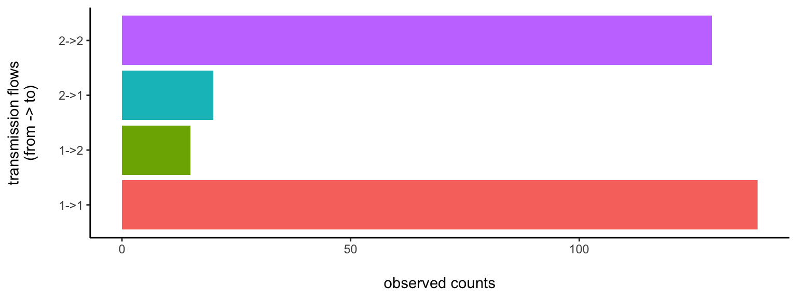
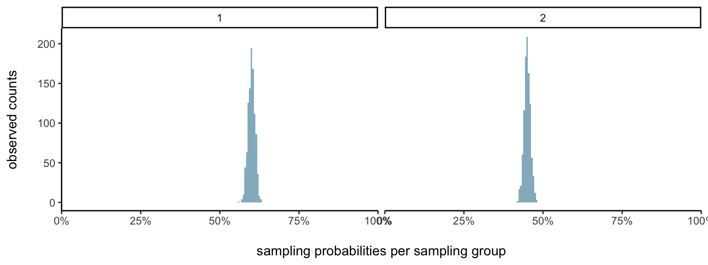
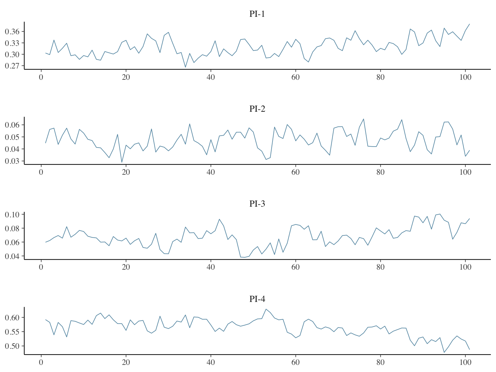
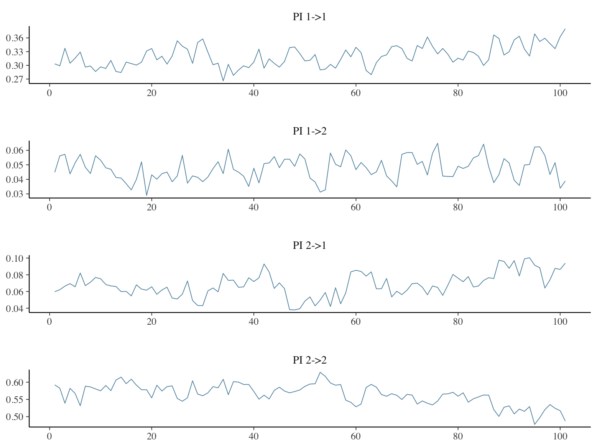

Here is a very first example data set for you to have a go at. Please read the sections “Our Job” and “Our Solution” on the main page before you go ahead here.
phyloflows expects input data in a specific format. First, a data.frame of observed transmission counts within and between population groups, which we call dobs. Second a data.frame that summarises prior information on how population groups were sampled, which we call dprior.
To get you started, phyloflows comes with a small simulated example data set of transmission counts and sampling information between two population groups, denoted by “1” and “2”:
require(phyloflows)
require(ggplot2)
require(bayesplot)
require(data.table)
require(coda)
data(twoGroupFlows1, package="phyloflows")
dobs <- twoGroupFlows1$dobs
dprior <- twoGroupFlows1$dpriordobs
#> REC_TRM_CATEGORY TR_TRM_CATEGORY TR_SAMPLING_CATEGORY
#> 1: 1 1 1
#> 2: 2 1 1
#> 3: 1 2 2
#> 4: 2 2 2
#> REC_SAMPLING_CATEGORY TRM_OBS TRM_CAT_PAIR_ID
#> 1: 1 139 1
#> 2: 2 15 2
#> 3: 1 20 3
#> 4: 2 129 4Data.frame dobs must contain the columns TR_TRM_CATEGORY, REC_TRM_CATEGORY, TRM_CAT_PAIR_ID, and TRM_OBS. Each row specifies observed counts of transmissions from a transmitter group to a recipient group. Each combination of transmission flows is given an ID, and that ID is stored in TRM_CAT_PAIR_ID. dobs also must contain the columns TR_SAMPLING_CATEGORY and REC_SAMPLING_CATEGORY, which associate each transmitter/recipient group with a sampling category. We will get to this in a minute. For now, let us look at the data.frame. The first row contains counts of transmission flows from group “1” to group “1”, and there are 139 of them. The next row contains counts of transmission flows from group “1” to group “2”, and there are 15 of them. Here is a barplot of our input data:

Each transmitter/recipient group is associated to a sampling category. This can be “sampling group a” for both “1” and “2”, or “a” and “b” respectively for “1” and “2”. In our little data set, we gave the same name to transmitter/recipient and sampling groups. Data.frame dprior specifies the probability of sampling an individual from each sampling group. To keep this as flexible as possible, samples from the sampling distribution, rather than say the mean and standard deviation, need to be given. Data.frame dprior must contain the columns SAMPLING_CATEGORY, SAMPLE, P and LP. SAMPLING_CATEGORY specifies the sampling group; SAMPLE is just an ID specifying if it is the first, second, … sample; P is the value of the sample, and LP is the log density of the sample.
head(dprior)
#> SAMPLING_CATEGORY P SAMPLE LP
#> 1: 1 0.5824160 1 2.318750
#> 2: 1 0.6184042 2 2.168504
#> 3: 1 0.6033518 3 3.548540
#> 4: 1 0.6015475 4 3.585452
#> 5: 1 0.5918721 5 3.321375
#> 6: 1 0.6034198 6 3.546614Here is a histogram of the sampling distribution from sampling groups “1” and “2”. Notice that in our example, the probability of sampling individuals in group “1” is higher than that among individuals in group “2”.

Now that we understand the input data, we are ready to estimate the transmission flows within and between the two population groups, \[ \pi=(\pi_{11}, \pi_{12}, \pi_{21}, \pi_{22}). \] We just need to specify a seed, number of iterations of the Markov Chain Monte Carlo algorithm, a flag for verbose output, and an output file name if you like to have the results written to an .rda file.
control <- list(seed=42, mcmc.n=500, verbose=0)
ans <- phyloflows:::source.attribution.mcmc(dobs, dprior, control)
#>
#> Setting seed to 42
#> Number of parameters: 17
#> Dimension of PI: 4
#> Sweep length: 5
#> Number of sweeps: 100
#> Number of iterations: 500
#> Number of transmission pair categories updated per iteration, and their frequencies:
#>
#> 2
#> 4
#>
#> Sweeps done: 100Let s have a look at the messages first.
control[['mcmc.n']]. In our case, it is \(50/5=10\). If we had set control[['mcmc.n']]<- 51, then the total number of sweeps would have been \(11\).control[['mcmc.n']]<- 51, then the total number of iterations would have been \(5*11=55\).Let us have a look at the output:
str(ans)
#> List of 12
#> $ with.sampling: logi TRUE
#> $ time : 'difftime' num 0.458211898803711
#> ..- attr(*, "units")= chr "secs"
#> $ dlu :Classes 'data.table' and 'data.frame': 4 obs. of 3 variables:
#> ..$ WHO : Factor w/ 2 levels "TR_SAMPLING_CATEGORY",..: 1 1 2 2
#> ..$ SAMPLING_CATEGORY: num [1:4] 1 2 1 2
#> ..$ UPDATE_ID : int [1:4] 1 2 3 4
#> ..- attr(*, ".internal.selfref")=<externalptr>
#> ..- attr(*, "sorted")= chr "UPDATE_ID"
#> $ dl :Classes 'data.table' and 'data.frame': 8 obs. of 4 variables:
#> ..$ WHO : Factor w/ 2 levels "TR_SAMPLING_CATEGORY",..: 1 1 1 1 2 2 2 2
#> ..$ SAMPLING_CATEGORY: num [1:8] 1 1 2 2 1 1 2 2
#> ..$ UPDATE_ID : int [1:8] 1 1 2 2 3 3 4 4
#> ..$ TRM_CAT_PAIR_ID : int [1:8] 1 2 3 4 1 3 2 4
#> ..- attr(*, ".internal.selfref")=<externalptr>
#> ..- attr(*, "sorted")= chr "UPDATE_ID"
#> $ dlt :Classes 'data.table' and 'data.frame': 4 obs. of 4 variables:
#> ..$ TRM_CAT_PAIR_ID: int [1:4] 1 2 3 4
#> ..$ TR_UPDATE_ID : int [1:4] 1 1 2 2
#> ..$ REC_UPDATE_ID : int [1:4] 3 4 3 4
#> ..$ TRM_OBS : int [1:4] 139 15 20 129
#> ..- attr(*, ".internal.selfref")=<externalptr>
#> ..- attr(*, "sorted")= chr "TRM_CAT_PAIR_ID"
#> $ nprior : int 1000
#> $ sweep : int 5
#> $ nsweep : num 100
#> $ n : num 500
#> $ pars :List of 9
#> ..$ LAMBDA: num [1, 1:4] 0.2 0.2 0.2 0.2
#> ..$ XI : num [1:101, 1:4] 0.603 0.603 0.591 0.591 0.591 ...
#> ..$ XI_LP : num [1:101, 1:4] 3.56 3.56 3.24 3.24 3.24 ...
#> ..$ S : num [1:101, 1:4] 0.368 0.368 0.36 0.355 0.355 ...
#> ..$ S_LP : num [1:101, 1:4] 6.74 6.74 6.42 6.82 6.82 ...
#> ..$ Z : int [1:101, 1:4] 366 366 381 361 361 345 345 333 333 333 ...
#> ..$ NU : num 1102
#> ..$ N : int [1:101, 1] 1226 1113 1183 1113 1104 1088 1100 1154 1108 1108 ...
#> ..$ PI : num [1:101, 1:4] 0.303 0.299 0.337 0.305 0.316 ...
#> $ it.info :Classes 'data.table' and 'data.frame': 501 obs. of 7 variables:
#> ..$ IT : int [1:501] 0 1 2 3 4 5 6 7 8 9 ...
#> ..$ PAR_ID : int [1:501] 0 1 2 3 4 NA 1 2 3 4 ...
#> ..$ BLOCK : chr [1:501] "INIT" "S-Z-N" "S-Z-N" "S-Z-N" ...
#> ..$ MHRATIO : num [1:501] 1 0.012701 1 0.000414 0.000642 ...
#> ..$ ACCEPT : int [1:501] 1 0 1 0 0 1 1 1 0 0 ...
#> ..$ LOG_LKL : num [1:501] -26.7 -26.7 -23.5 -23.5 -23.5 ...
#> ..$ LOG_PRIOR: num [1:501] 29 29 35.2 35.2 35.2 ...
#> ..- attr(*, ".internal.selfref")=<externalptr>
#> $ curr.it : int 501We are mostly interested in the joint posterior distribution \[ p(\pi | n ), \] which is just a component of the entire posterior distribution of all parameters \[ p(\pi, z, Z, \xi, s | n ). \]
So let us look at just this component in the output, and make a trace plot:
post.pi <- ans[['pars']][['PI']]
colnames(post.pi) <- paste0('PI-',1:ncol(post.pi))
bayesplot:::mcmc_trace(post.pi, pars=colnames(post.pi), facet_args = list(ncol = 1), n_warmup=0)
Ok, fab. Of course we would like many more iterations, perhaps \(10,000\) sweeps are a good number. We can do that. But what really are PI-1, PI-2, PI-3, PI-4? The numbers 1-4 are just the values of the transmission pair IDs in dobs, dobs$TRM_CAT_PAIR_ID. So we can associate more interpretable names to the output as follows:
post.pi <- ans[['pars']][['PI']]
setkey(dobs, TRM_CAT_PAIR_ID) #order by pair IDs
post.pi.colnames <- paste0('PI ',dobs$TR_TRM_CATEGORY,'->',dobs$REC_TRM_CATEGORY)
colnames(post.pi) <- post.pi.colnames
bayesplot:::mcmc_trace(post.pi, pars=colnames(post.pi), facet_args = list(ncol = 1), n_warmup=0)
That’s it for now. Use your usual R wizadry to process the output further, and have a look at the other vignettes.